開催概要
| 日時 | 11月23日(月・祝)（開催済み） |
|---|---|
| 場所 | 都南つどいの森 森林創作実習館 |
| 参加者 | 41名 |
| 内容 | 葉っぱの金継ぎ／自然素材のリース／スウェーデントーチ |
| 問い合わせ | 都南つどいの森 019-637-0877 |
※ このクラフト講座は終了しています。ご参加のみなさま、お疲れさまでした。
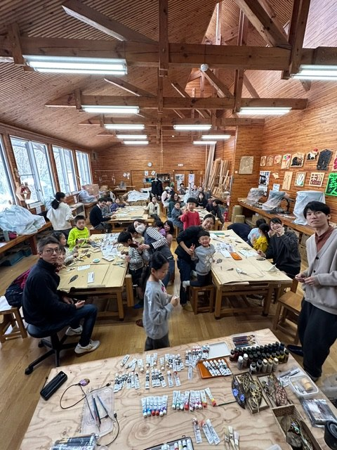
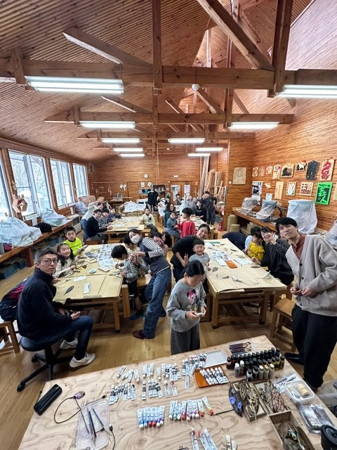
1 葉っぱの金継ぎ
葉っぱの上に金の線を描き起こし、線で区切った面を色とりどりに塗り分けて仕上げる講座です。器の金継ぎのように、継ぎ目や線そのものを作品の見どころにします。同じ葉っぱから、線の引き方と色の選び方で、まったくちがう作品が並びました。
当日の動画。YouTubeで開く → 金継ぎの考え方と作り方は、11月14日のワークショップのページとコラム「葉っぱの金継ぎ」で紹介しています。
できあがった作品です。写真をクリックすると大きく表示されます。
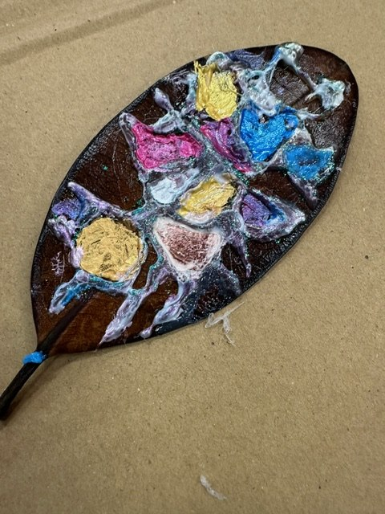
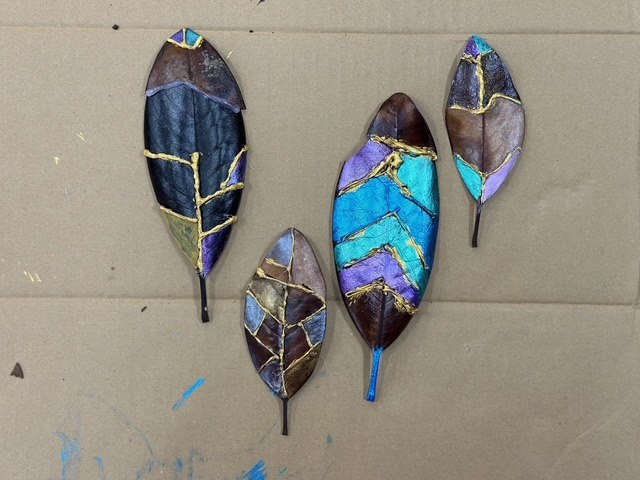
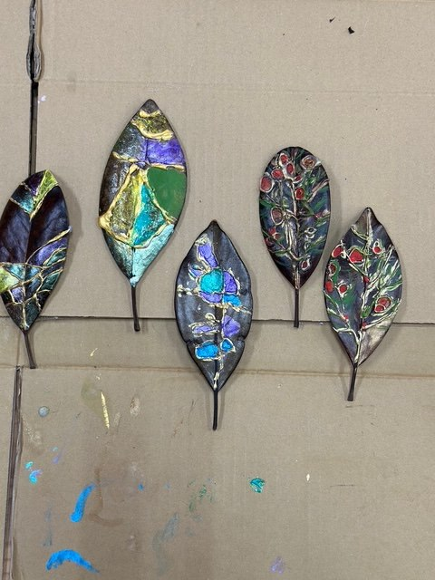
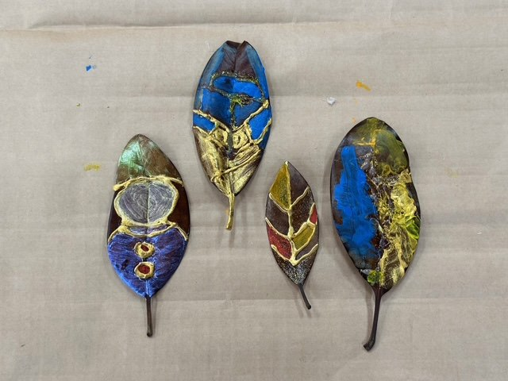
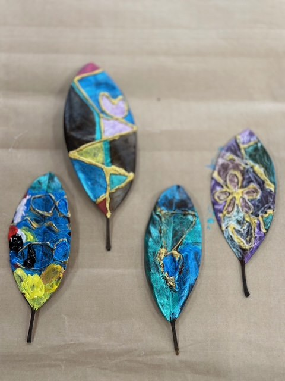
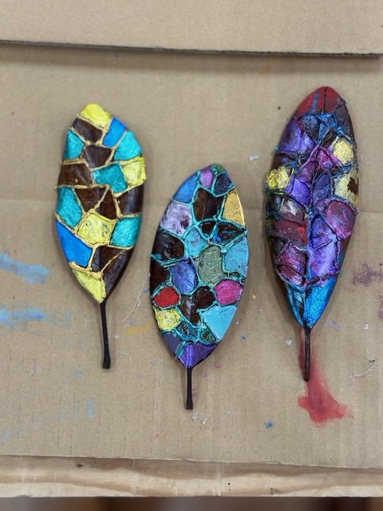
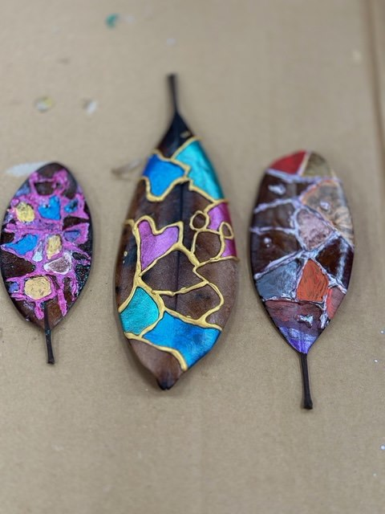
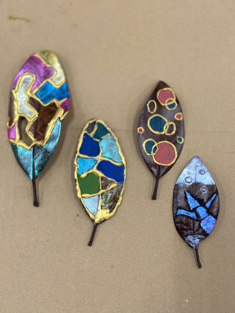
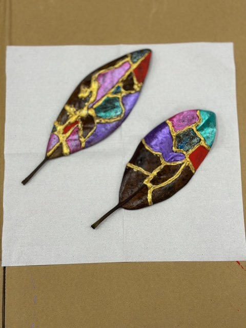
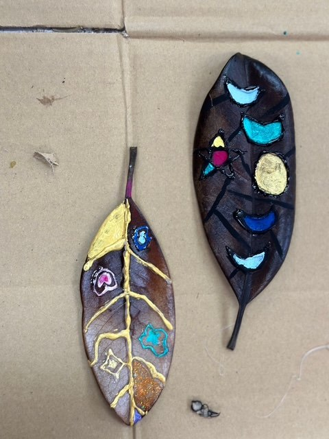
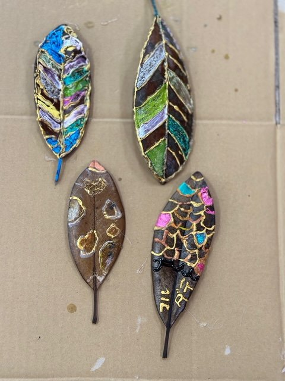
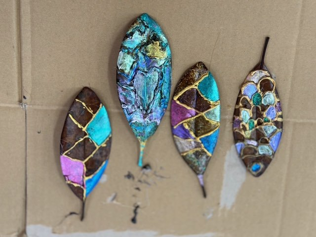
2 自然素材のリース
つるを丸めた輪の土台に、針葉樹の枝、赤い実、松ぼっくり、どんぐり、ハスの実などを留めて、自分だけのリースを作る講座です。床に広げたシートの上に座り、親子で素材を選びながら作りました。
当日の動画。YouTubeで開く →
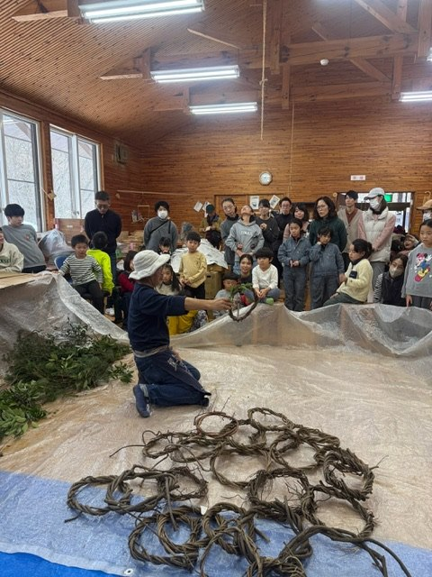
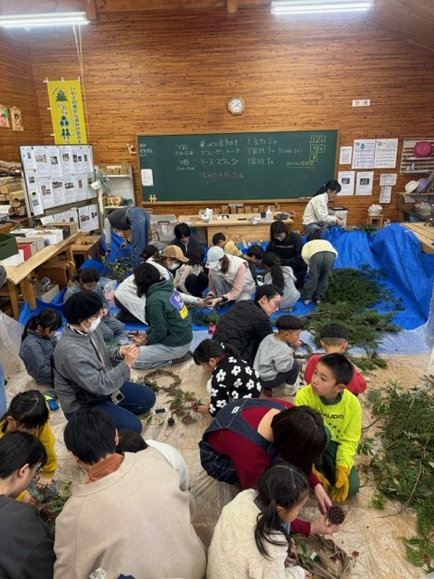
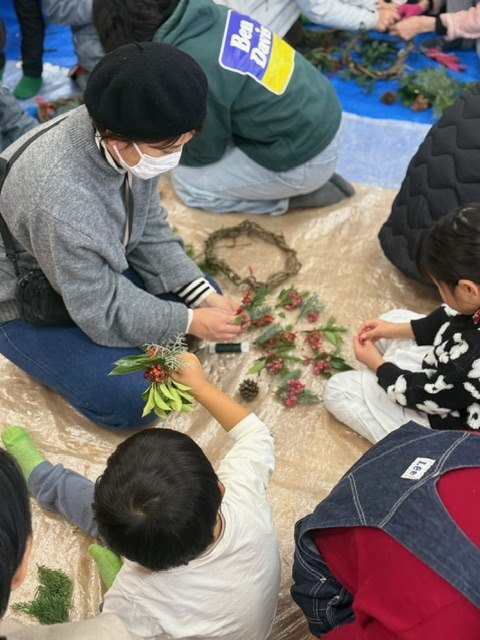
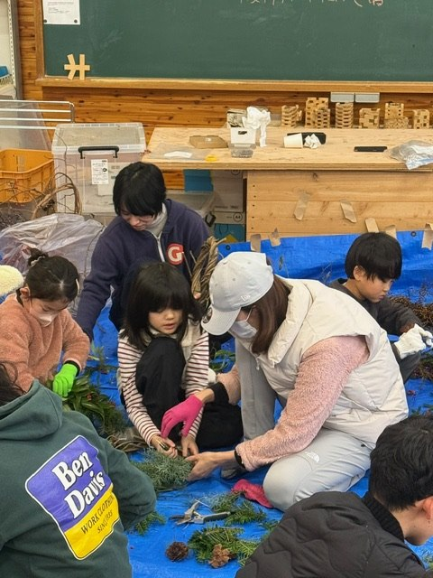
できあがったリースです。同じ素材を使っても、枝の向きや実の置き場所で、まったくちがう表情になりました。
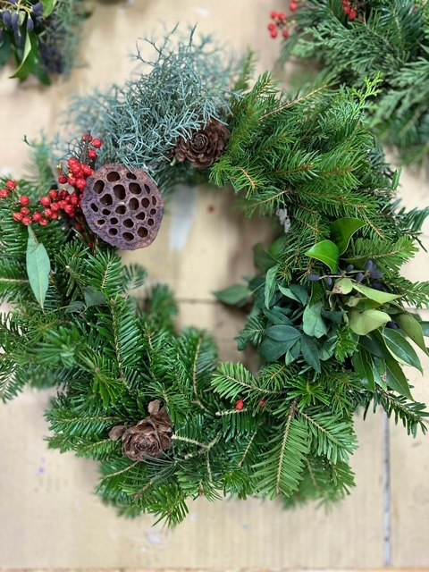
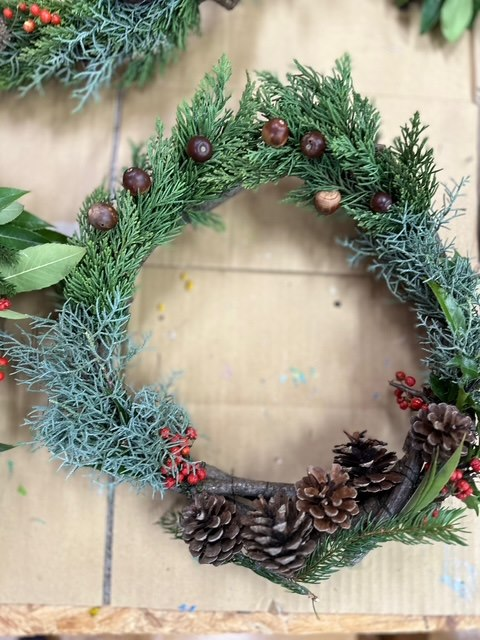
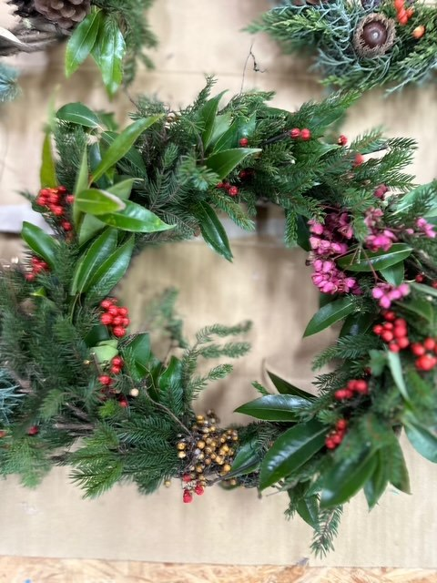
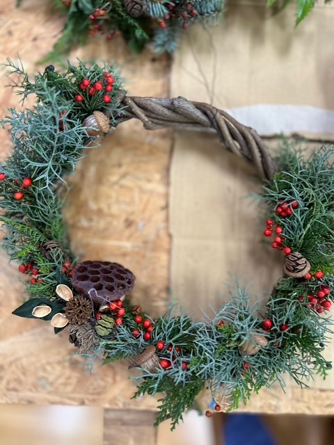
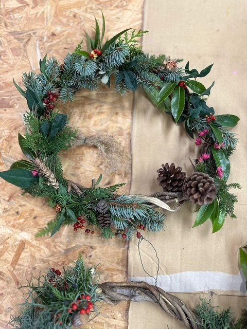
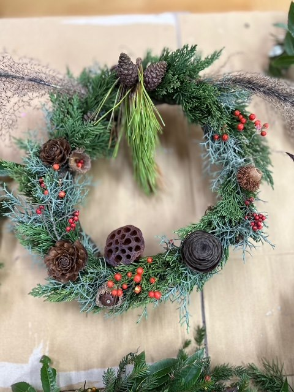
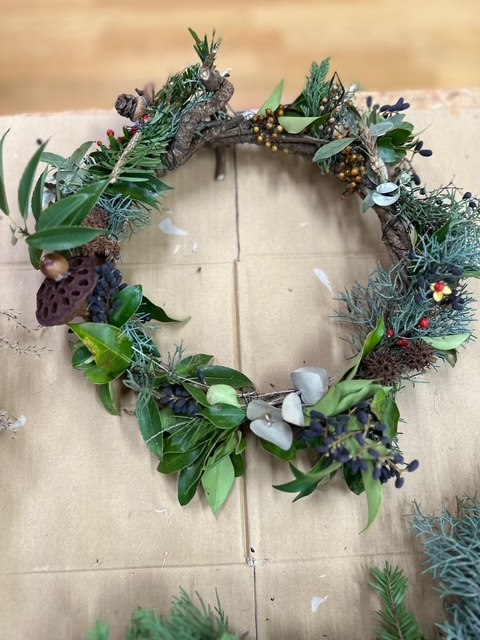
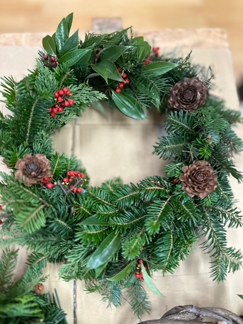
3 スウェーデントーチ
スウェーデントーチは、丸太に切り込みや割れ目を入れ、上から火をつけて燃やす、太い薪のロウソクです。切り込みや割れ目が煙突の役目をして、上のほうでじっくり燃え続けます。
当日の製作風景は、写真を撮り忘れてしまいました。かわりに、動画をご覧ください。
動画。YouTubeで開く →
今回は「薪割り機で4つに割って組む方法」で作りました
スウェーデントーチの作り方には、大きく2つあります。チェンソーで丸太に十字の切り込みを入れる一般的な方法と、薪割り機で丸太を割って組み直す方法です。今回は、チェンソーを使わない薪割り機で作る方法で作りました。手順は次の5つです。
- 4等分に割る 薪割り機で丸太を縦に2つに割り、それぞれをさらに半分にして4片にします。割り口が芯（年輪の中心）を通ると、きれいに組み直せます。
- 芯側の角を削る 各片の芯側の角をナタで削り、組んだとき直径2〜3cmの細い煙道になるようにします。上から5〜8cmだけ漏斗状に広げ、内面はささくれを残して粗く削ると、火がつきやすくなります。
- 根元に吸気口をつくる 1〜2片の芯側の根元を三角に3〜4cm欠きます。さらに根元の継ぎ目に割り箸を差し、着火のあいだだけすき間を広げます。
- 組み直して針金で締める 割る前と同じ向きに4片を合わせ、上下2か所を針金（なまし鉄線）で締めます。上部の漏斗部分に着火材を詰めておきます。
- 火をつけ、割り箸を抜く 上部に点火します。火が安定したら（10〜15分）、根元の割り箸を手袋やペンチで抜き、吸気を絞ります。燃え方が落ち着き、長持ちします。
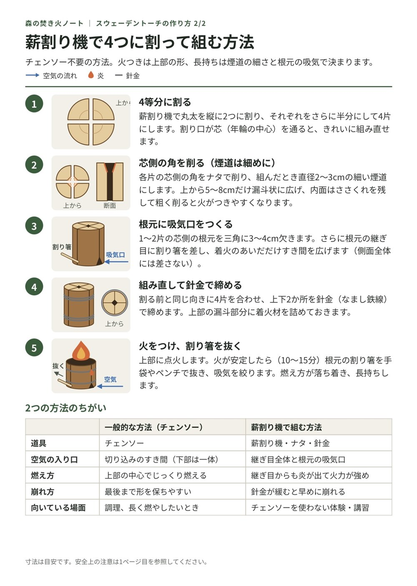
スウェーデントーチの作り方（A4・2ページ）
チェンソーを使う方法と使わない方法の手順、2つの方法のちがいを、図入りでまとめた資料です。
燃え残りの柱に、横向きの線が並ぶしくみは、11月7日の大人のあかばやし探検隊のページで紹介しています。
次回のあかばやし探検隊は、12月27日(日)に正月飾りづくり
来月のあかばやし探検隊は、12月27日(日)に「正月飾りづくり」を行う予定です。くわしい内容と申し込みの方法は、決まりしだい、このホームページでお知らせします。